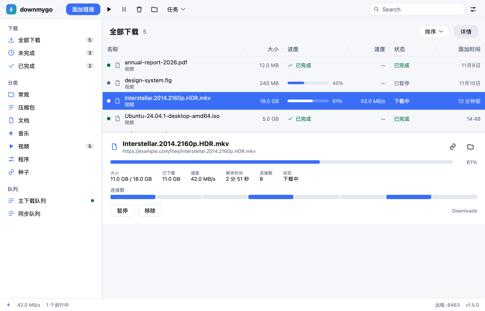

下载，即刻启程
Downloads, on the go.
用 Go 写的跨平台下载管理器。界面原生绘制，不启动 WebView；整个应用是一个二进制。

它做什么
多连接与续传
默认 8 条连接，剩余最大的分段自动二分；崩溃、断网、重启后从原位置继续。
内置种子
magnet 与 .torrent 直接下载，DHT、tracker、peer 都在里面；可做种、可限上传。
视频与图库
视频交给 yt-dlp、图库交给 gallery-dl，没装就自己装，进度就在列表里。
浏览器接管
Chrome、Firefox 扩展与油猴脚本：右键把链接交给它，站点 Cookie 一起带上。
加密 DNS 与 VPN
DoH / DoT 解析，可把每个连接绑到指定网卡，隧道一断流量就停。
自己更新
检查 GitHub 上的新版本，校验 SHA-256，下载并替换自身，然后重新打开。
三步开始
下载
macOS 用 .dmg，Windows 用 setup.exe，Linux 用 .deb 或 .tar.gz。
添加
粘贴一个链接、拖进一个种子，或者装个浏览器扩展直接右键。
完成
按分类自动归位；压缩包可以自动解开；手机在同一网络里也能控制。
深色也一样

命令行与自动化
downmygo get https://example.com/file.zip -o ~/Downloads -c 8
downmygo import links.txt # 导入链接列表
downmygo grab https://… # 列出页面上的链接
downmygo mcp # 以 MCP 服务运行
downmygo install-host <扩展ID> # 注册浏览器扩展
本地 API 在 127.0.0.1:8463，token 保护；打开远程控制后，手机浏览器也能添加与暂停。